导航当前项 · 保留现状镜片
2026-10-19 用户选择 A，见 ADR 0039。保留居中玻璃胶囊、原版四个图标、镜片和切换动效；B/C 不采用。没有导航实现变化。
本地 39 号画板，线上未同步。截图为合成工作区的实际 Web 页面，不代表 AI 连接或真机验收。
当前项 · 浅色与深色
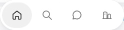
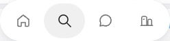
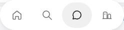
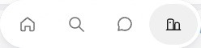
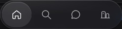
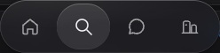
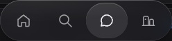
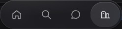
上方局部通过同一主页临时切换当前项；实际搜索页隐藏胶囊。下方 AI 与设置页通过真实点击打开，未注入样式或修改页面。
手机 390 · 当前页面
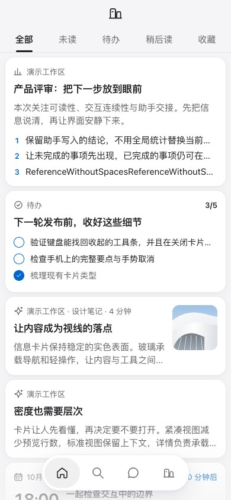
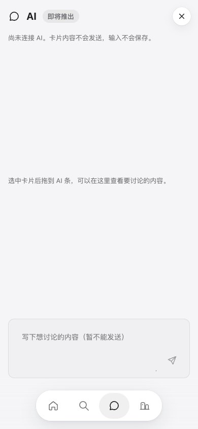
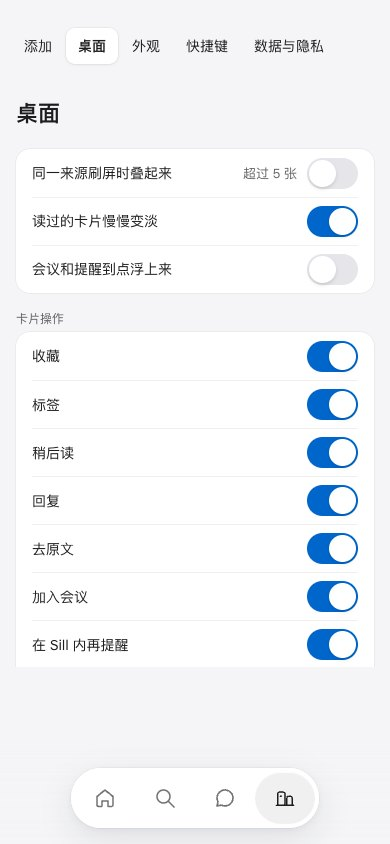
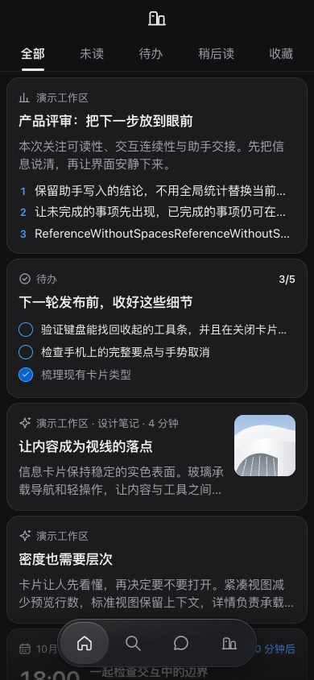
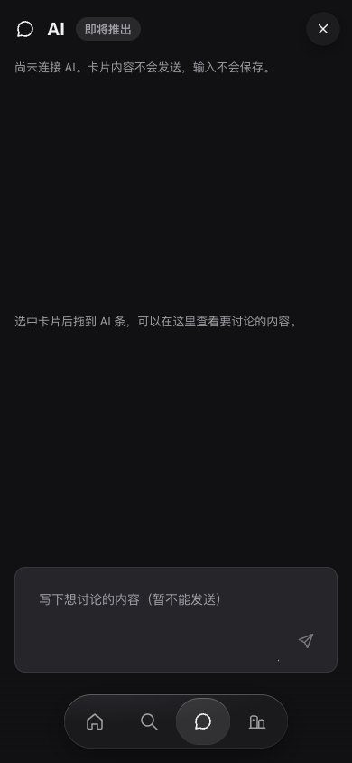
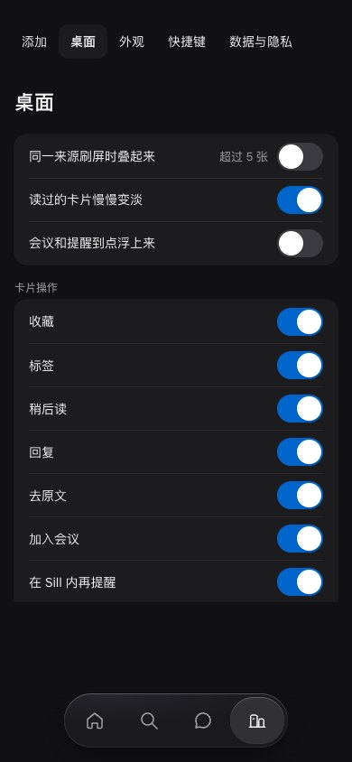
窄屏 320
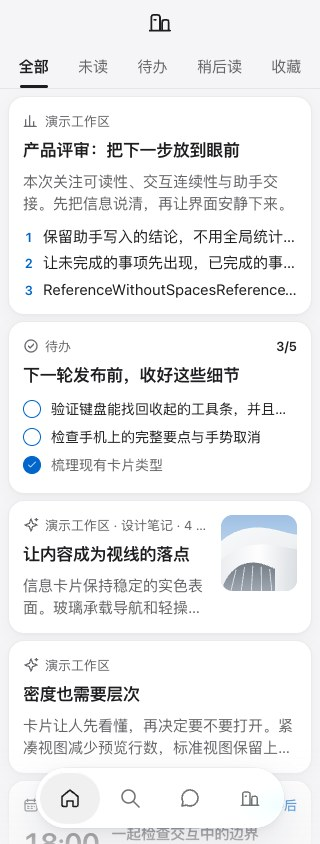
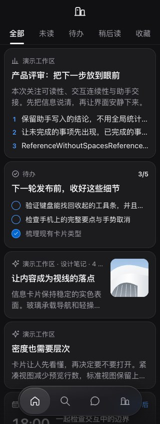
桌面 1440
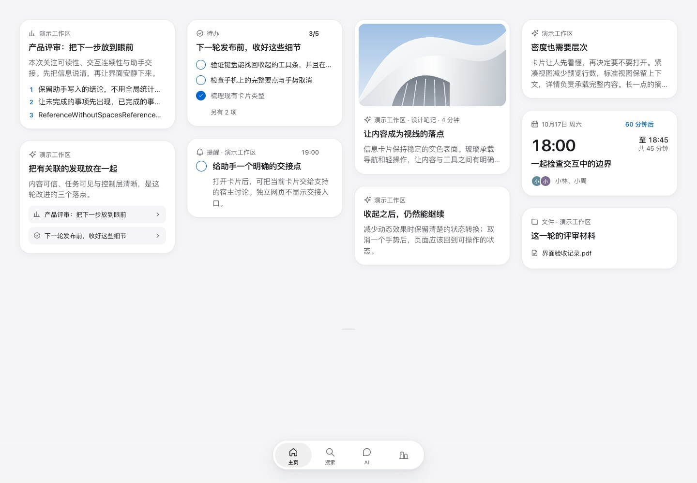
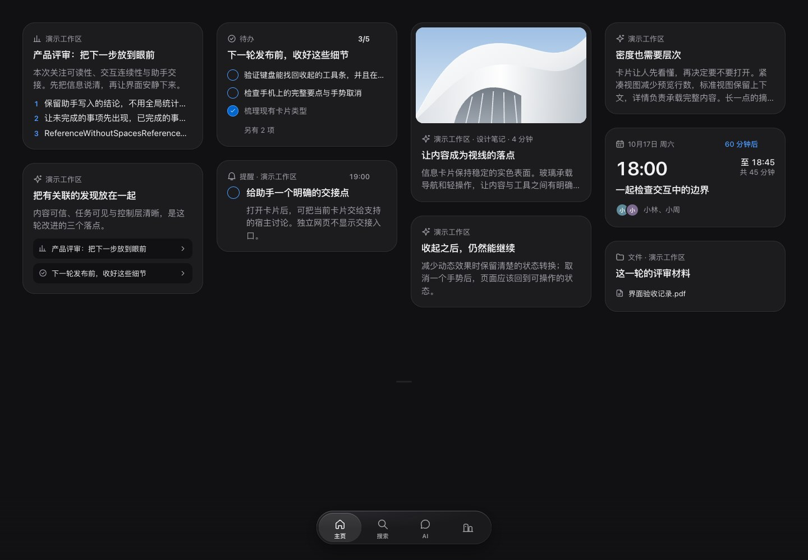
当前页保留 aria-current。减少动态效果时镜片直接到位。Mac 未改；Safari、真机未检查。